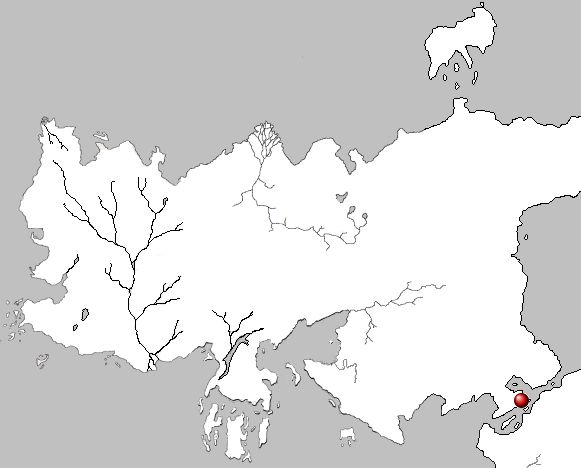

Qarth
Qarth is an ancient port city located on the south coast of the Essos continent. Situated in a central location, Qarth is a gateway of commerce and culture between the east and west, and the north and south. Brimming with wealth, the city’s architecture makes a grand display. It is home to warlocks and merchant princes, and nominally ruled by the Pureborn, however the powerful guilds Thirteen, Tourmaline Brotherhood and the Ancient Guild of Spicers all attempt to play a role in the governance of the city. It has been referred to as the Queen of Cities.
Map on Next page.
